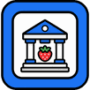

<!doctype html>
<!--
  논산런치 · 점심 지도 (배포판)

  2026-08-28 개편 — 사장 지시 "전부 빼라". 상단 명패·설정 시트·필터 칩·상태 줄·
  하단 버튼 4개·동네 보기(폴리곤·범례·묶음 라벨)를 **DOM 에서 제거**했다.
  남은 것: 네이버 바탕지도 · 지점 마커 · 마커 167 · 하단 시트 · 현재 위치 버튼 하나.

  2026-08-28(2차) 사장 지시 — 지점 마커와 현재 위치 마커를 **사장이 직접 그린 그림**으로 바꿨다.
  img/branch.png(지점, 34px 정사각·가운데 앵커) · img/me.png(내 위치, 높이 44px·아래 꼭짓점 앵커).
  base64 가 아니라 **파일 참조**다 — 그림만 갈아끼우면 되고 HTML 이 무거워지지 않는다.
  지점 명패("지점 이름" 글자)는 제거했다. 그림만 남는다. 기본 점은 회색 대신 브랜드 파랑이다.

  ── 마커 규칙 (선택하게 하지 않는다 — 항상 전부 보인다) ─────────────────
  기본 = 파랑 점(93곳). 특별 선정 = 그 칩에 쓰이는 아이콘(74곳).
  겹치는 곳은 하나만 그린다. 우선순위(데이터 pk 필드에 이미 반영):
  논슐랭 > 블루리본 > 백년가게 > 식객허영만 > 또간집 > 새로오픈 > 인기체인.
  아이콘 출처는 본 앱(src/build_webapp.py)의 칩 그대로다 —
  논슐랭·블루리본·백년가게는 PNG(data/strawberry.png·blueribbon.png·century.png)를
  그대로 심었고, 인기체인🔥·식객🍚·또간집📺·새로오픈🆕는 본 앱과 같은 이모지 문자다.

  ── 쌍둥이 파일 ─────────────────────────────────────────────────────────
  app-ours.html(MapLibre 판)은 **이력으로 얼린다.** 바탕지도 전환 안이 폐기돼
  qa/make-ours.sh 복제 계약도 끝났다. 이 파일은 네이버 단일이다.

  NCP Maps 클라이언트 키(ncpKeyId) 기본값: uu5vs9jn56
  등록된 Web 서비스 URL: http://localhost · http://vanyale-dev.github.io · https://vanyale-dev.github.io
  클라이언트 키는 HTML 노출이 전제이고 도메인 제한이 실제 보호막이라 파일에 둔다.
  활성 API 는 Dynamic Map 하나뿐 — Geocoding·Static Map·Directions 를 호출하면 429 다.

  QA: window.__qa v1 (계약서 qa/HOOKS.md) · 관문 `node qa/gate.mjs <baseUrl> <page>`
      T2(필터 전수)는 칩이 사라져 이제 대상이 아니다.
-->
<html lang="ko">
<head>
<meta charset="utf-8">
<meta name="viewport" content="width=device-width, initial-scale=1, viewport-fit=cover">
<meta name="theme-color" content="#26395B">
<meta name="color-scheme" content="light">
<title>점심 지도 · 논산런치</title>
<link rel="icon" href="data:,">
<!-- 첫 타일까지의 왕복을 줄인다(crossorigin 없음 — 스크립트·이미지는 비 CORS 요청이다). -->
<link rel="preconnect" href="https://oapi.map.naver.com">
<link rel="preconnect" href="https://nrbe.pstatic.net">
<link rel="preconnect" href="https://ssl.pstatic.net">
<style>
  /* ── 팔레트 (이 밖의 색을 쓰지 않는다) ───────────────────────────── */
  :root {
    --ink:#29261F; --navy:#26395B; --navy-deep:#1A2A44; --red:#C23B2E;
    --paper:#FAF7F0; --paper-dim:#F1ECE0; --paper-line:#D9D2C4; --paper-ink-sub:#6B6558;
    --wall:#E9E6DF; --wall-ink:#33383F; --wall-sub:#77706A;
    /* 점 파랑 — 사장이 그린 img/branch.png 에서 실제로 뽑은 주 색(면적 최대 7,653px).
       새로 고른 색이 아니다. 그림과 점이 같은 파랑을 쓴다. */
    --pin-blue:#1C73F2;
    --shadow:0 1px 2px rgba(30,28,20,.10), 0 8px 22px rgba(30,28,20,.09);
    --shadow-s:0 1px 2px rgba(30,28,20,.14);
    --prov:0px;         /* 바탕지도 공급자 표기(네이버 로고·저작권)를 위해 비우는 아래 여백 */
  }
  * { box-sizing:border-box; -webkit-tap-highlight-color:transparent; }
  html, body { margin:0; padding:0; height:100%; overscroll-behavior:none; }
  body {
    font-family:-apple-system, BlinkMacSystemFont, "Apple SD Gothic Neo", sans-serif;
    background:var(--wall); color:var(--ink); font-size:14px; line-height:1.45;
    -webkit-text-size-adjust:100%;
  }
  /* 상단바가 없다 — 지도가 화면을 통째로 쓴다 */
  #app { display:flex; flex-direction:column; height:100%; width:100%; background:var(--paper); }

  /* ── 지도 영역 ───────────────────────────────────────────────────── */
  /* overflow:clip — hidden 이면 스크롤 컨테이너가 되어 시트 안 버튼을 누를 때 지도가 밀린다 */
  #mapwrap { position:relative; flex:1 1 auto; min-height:0; background:var(--paper); overflow:clip; }
  /* 네이버 SDK 가 컨테이너에 자기 position 을 박아 inset:0 을 무력화한다 — 크기를 못박는다 */
  #map  { position:absolute; inset:0; width:100%; height:100%; display:none; }
  #flat { position:absolute; inset:0; width:100%; height:100%; display:none; touch-action:manipulation; }
  #pmk  { position:absolute; inset:0; display:none; pointer-events:none; }
  #mapwrap.live #map { display:block; }
  #mapwrap.paper #flat, #mapwrap.paper #pmk { display:block; }

  /* 좌표에 '중심'이 오게 하는 0×0 감싸개 — 상자 크기를 anchor 로 쓰면 엔진마다 어긋난다 */
  .zwrap { position:relative; width:0; height:0; }
  /* 지점 마커는 그림의 '한가운데'가 지점 좌표다(34×34 정사각) */
  .zwrap > .branch { position:absolute; left:0; top:0; transform:translate(-50%,-50%); }
  /* 현재 위치 — 정확도 원은 중심 앵커(원이 커지면 상자도 커진다),
     핀은 물방울이라 **아래 꼭짓점**이 좌표다(가운데에 두면 실제 위치보다 아래로 밀린다). */
  .zwrap > .gacc { position:absolute; left:0; top:0; transform:translate(-50%,-50%);
                   pointer-events:none; z-index:1; }
  .zwrap > .gpin { position:absolute; left:0; top:0; transform:translate(-50%,-100%);
                   pointer-events:none; z-index:2; line-height:0; }
  .zwrap > .gpin img { display:block; width:29px; height:44px; }
  /* 그림을 못 받았을 때만 — 옛 잉크 점으로 물러난다(중심 앵커로 되돌린다) */
  .zwrap > .gpin.nofile { transform:translate(-50%,-50%); }
  #pmk .pm { position:absolute; }
  #pmk .pm.c { transform:translate(-50%,-50%); }

  /* 지점 마커 — 사장이 직접 그린 그림. 글자 라벨은 없다(2026-08-28 지시 "라벨도 빼줘") */
  .branch { width:34px; height:34px; display:flex; align-items:center; justify-content:center;
    pointer-events:none; }
  .branch img { display:block; width:34px; height:34px; }
  /* 그림을 못 받았을 때만 쓰는 폴백 도형 — 깨진 아이콘 대신 옛 네이비 사각이 선다 */
  .bsq { display:block; width:19px; height:19px; background:var(--navy);
    border:2px solid var(--paper); border-radius:2px; box-sizing:content-box;
    box-shadow:0 0 0 1px var(--navy-deep), 0 1px 3px rgba(26,42,68,.35); }

  /* ── 식당 마커 ───────────────────────────────────────────────────────
     상자는 46×46(손가락 44 기준을 넘긴다), 보이는 알맹이는 그 안에서 작다.
     네이버 기본 지도는 자체 POI(색아이콘·색글씨)가 잔뜩 뜨므로 둘 다 종이색 halo 로
     바탕에서 떼어 놓는다(점 2.2px · 선정 아이콘 1.5px).
     점이 파랑이 된 뒤로 이 halo 가 더 중요해졌다 — 네이버 자체 파란 POI(지하철·국도 방패)와
     섞이지 않게, 두꺼운 종이색 테두리로 '찍은 점'처럼 떼어 놓는다.                */
  .mk { width:46px; height:46px; display:flex; align-items:center; justify-content:center; cursor:pointer; }
  .mk .gd {                                   /* 기본 점 — 93곳. 9px 회색 → 11px 브랜드 파랑 */
    width:11px; height:11px; border-radius:50%; background:var(--pin-blue);
    box-shadow:0 0 0 2.2px var(--paper); }
  .mk .ic {                                   /* 특별 선정 — 74곳. 점(15.4px)보다 확실히 크다 */
    width:24px; height:24px; border-radius:50%;
    background-color:var(--paper); border:1.5px solid var(--ink);
    display:flex; align-items:center; justify-content:center;
    font-size:14px; line-height:1; font-family:inherit;
    box-shadow:0 0 0 1.5px var(--paper), var(--shadow-s); }
  .mk .ic.img { background-repeat:no-repeat; background-position:50% 50%; background-size:15px 15px; }
  .ic-nc   { background-image:url(""); }     /* 논슐랭 = 본 앱 칩의 딸기 원본 */
  .ic-blue { background-image:url(""); }    /* 블루리본 #2C4A85 */
  .ic-cert { background-image:url(""); }      /* 백년가게 #70522A */

  /* ── 현재 위치 버튼 (지도 앱 표준 관용구 — 우하단 원형) ──────────────
     네이버 로고·저작권(우하단, 약관상 가릴 수 없다) 위에 앉는다: --prov 만큼 띄운다 */
  .geobtn {
    position:absolute; z-index:8; width:48px; height:48px; padding:0; cursor:pointer;
    right:14px; right:max(14px, env(safe-area-inset-right));
    bottom:calc(14px + var(--prov));
    display:flex; align-items:center; justify-content:center;
    background:var(--paper); border:1.5px solid var(--paper-line); border-radius:50%;
    box-shadow:var(--shadow); }
  .geobtn:active { background:var(--paper-dim); }
  .geobtn[aria-pressed="true"] { background:var(--navy); border-color:var(--navy); }

  /* ── 하단 시트 ───────────────────────────────────────────────────── */
  .sheet {
    position:absolute; left:0; right:0; bottom:0; z-index:20;
    background:var(--paper); border-top:1.5px solid var(--ink);
    border-radius:14px 14px 0 0; box-shadow:var(--shadow);
    padding:10px 14px calc(16px + var(--prov)); transform:translateY(101%);
    transition:transform .18s ease-out; max-height:76%; overflow-y:auto;
    padding-left:max(14px, env(safe-area-inset-left));
    padding-right:max(14px, env(safe-area-inset-right));
  }
  .sheet.on { transform:translateY(0); }
  .sh-grab { width:36px; height:4px; border-radius:2px; background:var(--paper-line); margin:0 auto 8px; }
  .sh-head { display:flex; align-items:flex-start; gap:8px; }
  .sh-head h2 { margin:0; font-size:18px; line-height:1.25; letter-spacing:-.3px; flex:1 1 auto; padding-top:8px; }
  .sh-x { flex:none; width:44px; height:44px; display:inline-flex; align-items:center; justify-content:center;
          background:var(--paper); border:1.5px solid var(--paper-line); border-radius:10px;
          font-family:inherit; font-size:12px; font-weight:700; color:var(--wall-ink); cursor:pointer; }
  .sh-tags { display:flex; flex-wrap:wrap; gap:5px; margin:8px 0 0; }
  .tag { font-size:11px; font-weight:700; line-height:1; padding:6px 9px; border-radius:11px;
         background:var(--paper-dim); color:var(--wall-ink); border:1px solid var(--paper-line); }
  .tag.red { background:var(--red); border-color:var(--red); color:var(--paper); }
  .sh-one { margin:9px 0 0; font-size:13.5px; color:var(--wall-ink); }
  .sh-facts { display:flex; flex-wrap:wrap; gap:10px; margin:9px 0 0; font-size:12.5px; color:var(--paper-ink-sub); }
  .sh-acts { display:flex; gap:7px; margin:12px 0 0; }
  .sh-acts a {
    flex:1 1 0; min-height:44px; display:inline-flex; align-items:center; justify-content:center;
    text-align:center; text-decoration:none; font-size:13px; font-weight:700; padding:8px;
    border-radius:10px; border:1.5px solid var(--navy); color:var(--navy); background:var(--paper);
  }
  .sh-acts a.fill { background:var(--navy); color:var(--paper); }

  /* ── 오류·안내 패널 ──────────────────────────────────────────────── */
  /* 안내는 전면을 덮지 않는다 — 지도는 계속 보이고, 공급자 표기도 가리지 않는다 */
  #fail { position:absolute; left:0; right:0; bottom:0; z-index:30; display:none;
          max-height:72%; overflow-y:auto; padding:0 10px 10px; }
  #fail.on { display:block; }
  .failbox { max-width:520px; margin:0 auto; background:var(--paper);
             border:1.5px solid var(--ink); border-radius:12px 12px 0 0;
             padding:14px 14px calc(14px + var(--prov)); box-shadow:var(--shadow); }
  .failbox h3 { margin:0 0 8px; font-size:15px; }
  .failbox ol { margin:8px 0 0; padding-left:18px; font-size:12.5px; color:var(--wall-ink); line-height:1.6; }
  .failbox code { background:var(--paper-dim); border:1px solid var(--paper-line); border-radius:4px;
                  padding:0 4px; font-size:11.5px; font-family:ui-monospace, SFMono-Regular, Menlo, monospace; }
  .failbox .row { display:flex; gap:6px; margin-top:11px; }
  .btn {
    flex:none; font-family:inherit; font-size:12.5px; font-weight:700; line-height:1;
    height:44px; min-width:44px; padding:0 12px; cursor:pointer; white-space:nowrap;
    display:inline-flex; align-items:center; justify-content:center;
    background:var(--paper); color:var(--ink);
    border:1.5px solid var(--paper-line); border-radius:10px; box-shadow:var(--shadow-s);
  }
  .btn.solid { background:var(--navy); border-color:var(--navy); color:var(--paper); box-shadow:none; }
  .note { font-size:11.5px; color:var(--paper-ink-sub); margin-top:9px; line-height:1.5; }

  @media (prefers-reduced-motion:reduce) { .sheet { transition:none; } }
</style>
<script>
"use strict";
/* ── 네이버 바탕지도 로더 ─────────────────────────────────────────────
   본 스크립트보다 먼저 시작해 첫 타일까지의 시간을 줄인다.
   키는 상수 하나뿐이다 — 설정 시트가 사라져 localStorage 3상태 기계도 걷어냈다.
   클라이언트 키는 HTML 노출이 전제이고 도메인 제한이 실제 보호막이다(정상).      */
var DEFAULT_KEY = "uu5vs9jn56";

window.__base = { kind:null, err:null, done:false, cb:null };
function __baseDone(kind, err){
  if (window.__base.done) return;
  window.__base.done = true; window.__base.kind = kind; window.__base.err = err || null;
  if (window.__base.cb) window.__base.cb();
}
(function bootBase(){
  /* 네이버 SDK 가 전역으로 부른다 — 주입 이전에 정의돼 있어야 한다 */
  window.navermap_authFailure = function(){
    /* 인증 실패는 지도를 이미 만든 뒤에도 온다 — 그때 SDK 는 window.naver 를 걷어 가므로
       우리 어댑터가 죽는다. 종이 바탕으로 물러나게 알린다. */
    window.__authFailed = true;
    __baseDone(null, "auth");
    if (window.__onAuthFail) { try { window.__onAuthFail(); } catch (e) {} }
  };
  var s = document.createElement("script");
  s.src = "https://oapi.map.naver.com/openapi/v3/maps.js?ncpKeyId=" + encodeURIComponent(DEFAULT_KEY);
  s.async = true;
  s.onload = function(){
    if (window.naver && window.naver.maps) __baseDone("naver");
    else if (!window.__authFailed) __baseDone(null, "load");
  };
  s.onerror = function(){ __baseDone(null, "network"); };
  document.head.appendChild(s);
})();
</script>
</head>
<body>
<div id="app">
  <div id="mapwrap">
    <div id="map"></div>
    <svg id="flat" xmlns="http://www.w3.org/2000/svg" aria-label="논산 식당 지도(바탕지도 없음)"></svg>
    <div id="pmk"></div>

    <button class="geobtn" id="geoBtn" type="button" aria-pressed="false" aria-label="현재 위치 표시"></button>

    <div class="sheet" id="sheet" role="dialog" aria-modal="false" aria-label="식당 정보"></div>

    <div id="fail" role="alert"><div class="failbox" id="failbox"></div></div>
  </div>
</div>

<script>
"use strict";
/* ═══════════════════════════════════════════════════════════════════════
   논산런치 · 점심 지도 — 본체 (2026-08-28 단순화판)
   구조: 상수 → 마커 그림 → 어댑터(naver·paper) → 마커 관리 → 시트 →
         현재 위치(캐릭터 교체 지점) → 오류 안내 → 시작 → QA 훅
   ═══════════════════════════════════════════════════════════════════════ */

var BRANCH = { la:36.1993678, lo:127.0891137 };   /* 이름 라벨은 제거됐다(2026-08-28) */
/* src/constants.py MOODS 와 글자 그대로 같아야 한다(띄어쓰기 포함) — 시트의 당김 표시에만 쓴다 */
var PULLS = ["뜨끈한 국물","매콤하게","시원하게","든든한 한 끼","속 편하게","모시는 날","빨리 한 끼"];
var C = { ink:"#29261F", paper:"#FAF7F0", paperLine:"#D9D2C4", paperInkSub:"#6B6558",
          pinBlue:"#1C73F2" };
var KLAT = Math.cos(36.2 * Math.PI / 180);

/* 축척 전환이 없어졌다 — 초기 뷰는 지점 근처 고정이고 그 뒤는 손으로 줌·팬 한다.
   네이버(구글 계열)는 256px 타일 기준 정수 줌이다. */
var NEAR_ZOOM = 14;
var MK_BOX = 46;                       /* 모든 마커의 손가락 상자 — 44×44 기준을 넘긴다 */

var PLACES = [];
var dataLoaded = false, mapReady = false, firstRender = false, A = null;
var geoOn = false, geoWatch = null, geoPos = null;

function $(id){ return document.getElementById(id); }
function esc(s){ return String(s == null ? "" : s).replace(/[&<>"']/g, function(c){
  return { "&":"&amp;", "<":"&lt;", ">":"&gt;", '"':"&quot;", "'":"&#39;" }[c]; }); }
function naverPlaceUrl(pid){ return "https://m.place.naver.com/restaurant/" + encodeURIComponent(pid) + "/home"; }

/* ═══ 1. 마커 그림 ═══════════════════════════════════════════════════
   167곳을 기본 파랑 점으로 깔고, 특별 선정에 해당하는 곳만 그 칩의 아이콘으로 바꾼다.
   고르게 하지 않는다 — 항상 전부 보인다(이모지 74 + 파랑 점 93).
   아이콘은 본 앱(src/build_webapp.py)의 칩과 같은 것이다:
     논슐랭·블루리본·백년가게 = 칩이 쓰는 PNG 원본(.straw·.ribbon·.cert)을 그대로 심었다.
     인기체인🔥·식객허영만🍚·또간집📺·새로오픈🆕 = 칩과 같은 이모지 문자.        */
var PICK = {
  nc:      { name:"논슐랭",     img:true },
  blue:    { name:"블루리본",   img:true },
  cert:    { name:"백년가게",   img:true },
  sikgaek: { name:"식객허영만", emoji:"🍚" },
  ttogan:  { name:"또간집",     emoji:"📺" },
  fresh:   { name:"새로오픈",   emoji:"🆕" },
  chain:   { name:"인기체인",   emoji:"🔥" }
};
var PICKCH = { nc:"N", blue:"B", cert:"C", sikgaek:"S", ttogan:"T", fresh:"F", chain:"H" };

function pickOf(p){ return (p.pk && PICK[p.pk]) ? p.pk : null; }
function markerHTML(p){
  var k = pickOf(p);
  if (!k) return '<div class="mk"><span class="gd" role="img" aria-label="식당"></span></div>';
  var m = PICK[k];
  return '<div class="mk"><span class="ic' + (m.img ? " img ic-" + k : "") +
    '" role="img" aria-label="' + esc(m.name) + '">' + (m.emoji || "") + "</span></div>";
}
/* 마커 시각 반경(그래픽 대비 표본의 둘레 반경) — 보이는 알맹이의 바깥 테두리까지 */
function visR(p){ return pickOf(p) ? 13.5 : 7.7; }   /* 아이콘 24/2+1.5halo · 점 11/2+2.2halo */
/* 대비 판정에 신고하는 '이 마커를 정의하는 색' */
function visFill(p){ return pickOf(p) ? C.ink : C.pinBlue; }
/* 지점 마커 — 사장이 직접 그린 그림 하나. 34px 정사각, 그림의 한가운데가 지점 좌표다.
   그림을 못 받으면(오프라인 첫 진입·파일 유실) onerror 가 옛 네이비 사각으로 물러난다. */
var BRANCH_IMG_OK = true;
function branchHTML(){
  if (!BRANCH_IMG_OK) return '<div class="zwrap"><div class="branch"><span class="bsq"></span></div></div>';
  return '<div class="zwrap"><div class="branch">' +
    '</div></div>';
}
function branchImgFail(img){
  BRANCH_IMG_OK = false;
  var box = img.parentNode; if (!box) return;
  box.innerHTML = '<span class="bsq"></span>';
}

/* ═══ 2. 축척·투영 공통 ══════════════════════════════════════════════ */
function nearBox(){
  var dLat = 1.2/111.32, dLng = 1.2/(111.32*KLAT);
  return { s:BRANCH.la-dLat, n:BRANCH.la+dLat, w:BRANCH.lo-dLng, e:BRANCH.lo+dLng };
}
function initialView(){ return { la:BRANCH.la, lo:BRANCH.lo, z:NEAR_ZOOM }; }
/* 화면의 실제 축척(m/px) — 현재 위치 정확도 원을 그릴 때 쓴다 */
function currentMpp(){
  if (A && A.mpp) { var v = A.mpp(); if (v) return v; }
  return mppAt(BRANCH.la, NEAR_ZOOM);
}
function mppAt(lat, z){ return 156543.03392 * Math.cos(lat * Math.PI/180) / Math.pow(2, z); }

/* ═══ 3. 어댑터 ══════════════════════════════════════════════════════
   naver(네이버 타일) · paper(네이버가 못 뜰 때의 정직한 종이 바탕).
   위쪽 코드는 어댑터의 project / marker 만 쓴다.                             */

/* ── 3-a. 네이버 ─────────────────────────────────────────────────── */
function NaverAdapter(){
  var map = null, self = this;
  this.kind = "naver";
  this.create = function(){
    var v = initialView();
    map = new naver.maps.Map("map", {
      center: new naver.maps.LatLng(v.la, v.lo), zoom: v.z, minZoom: 9, maxZoom: 19,
      zoomControl:false, scaleControl:false, mapTypeControl:false,
      /* 로고 컨트롤은 상시 노출이라 끌 수 없다(약관 제7조 ⑩). 저작권 표기도 켠 채로 둔다. */
      mapDataControl:true,
      mapDataControlOptions:{ position: naver.maps.Position.BOTTOM_RIGHT }
    });
    self.map = map;
  };
  function alive(){ return !!(window.naver && window.naver.maps && map); }
  this.zoom = function(){ return alive() ? map.getZoom() : NEAR_ZOOM; };
  this.mpp = function(){ return alive() ? mppAt(map.getCenter().lat(), map.getZoom()) : null; };
  this.project = function(lat, lng){
    if (!alive()) return [0, 0];
    var o = map.getProjection().fromCoordToOffset(new naver.maps.LatLng(lat, lng));
    return [o.x, o.y];
  };
  this.unproject = function(x, y){
    if (!alive()) return [0, 0];
    var c = map.getProjection().fromOffsetToCoord(new naver.maps.Point(x, y));
    return [c.lat(), c.lng()];
  };
  this.marker = function(html, lat, lng, z, raw){
    if (!alive()) return null;
    function icon(h){
      return raw ? { content:h, anchor:new naver.maps.Point(0, 0) }
                 : { content:h, size:new naver.maps.Size(MK_BOX, MK_BOX),
                     anchor:new naver.maps.Point(MK_BOX/2, MK_BOX/2) };
    }
    var m = new naver.maps.Marker({
      position: new naver.maps.LatLng(lat, lng), map: map, zIndex: z || 10, icon: icon(html)
    });
    return {
      raw: m,
      html: function(h){ m.setIcon(icon(h)); },
      pos: function(la, lo){ m.setPosition(new naver.maps.LatLng(la, lo)); },
      show: function(v){ m.setVisible(!!v); },
      shown: function(){ return m.getVisible(); },
      el: function(){ return m.getElement ? m.getElement() : null; },
      click: function(fn){ naver.maps.Event.addListener(m, "click", fn); },
      fire: function(){ naver.maps.Event.trigger(m, "click"); },   /* 진짜 클릭 경로 */
      destroy: function(){ m.setMap(null); }
    };
  };
  this.onMove = function(fn){ naver.maps.Event.addListener(map, "zoom_changed", fn); };
  this.resize = function(){ try { map.autoResize(); } catch (e) {} };
  this.painted = function(){
    /* 타일은 256px — 45~90px 짜리 네이버 로고를 타일로 세면 시각이 앞당겨진다 */
    var imgs = document.querySelectorAll("#map img");
    for (var i = 0; i < imgs.length; i++) if (imgs[i].complete && imgs[i].naturalWidth >= 128) return true;
    return false;
  };
  this.providerRects = function(){
    if (!alive()) return [];
    var out = [];
    [["naver-logo", "#map a[href*='naver'] img, #map img[src*='logo']"],
     ["naver-copyright", ".map_copyright"]].forEach(function(pair){
      var e = document.querySelector(pair[1]); if (!e) return;
      var r = e.getBoundingClientRect(); if (!r.width || !r.height) return;
      out.push({ id:pair[0], kind:"provider", x:+r.left.toFixed(1), y:+r.top.toFixed(1),
                 w:+r.width.toFixed(1), h:+r.height.toFixed(1), sel:pair[1] });
    });
    return out;
  };
}

/* ── 3-b. 종이 바탕 (바탕지도가 없을 때의 정직한 화면) ──────────────── */
function PaperAdapter(){
  var self = this, P = null, W = 0, H = 0;
  this.kind = "paper";
  this.create = function(){ self.layout(); self.paint(); };
  this.layout = function(){
    var wrap = $("mapwrap");
    W = wrap.clientWidth; H = wrap.clientHeight;
    var box = nearBox();
    var x0 = box.w*KLAT, x1 = box.e*KLAT, y0 = -box.n, y1 = -box.s, pad = 28;
    var k = Math.min((W-2*pad)/(x1-x0), (H-2*pad)/(y1-y0));
    var ox = (W-(x1-x0)*k)/2 - x0*k, oy = (H-(y1-y0)*k)/2 - y0*k;
    P = function(lat, lng){ return [ lng*KLAT*k+ox, -lat*k+oy ]; };
    P.inv = function(x, y){ return [ (oy-y)/k, (x-ox)/(KLAT*k) ]; };
    P.k = k;
  };
  this.paint = function(){
    var svg = $("flat");
    if (!P) self.layout();
    svg.setAttribute("viewBox", "0 0 " + W + " " + H);
    svg.innerHTML = '<rect x="0" y="0" width="' + W + '" height="' + H + '" fill="' + C.paper + '"/>' +
      '<rect x="0" y="0" width="' + W + '" height="' + H + '" fill="none" stroke="' + C.paperLine + '" stroke-width="2"/>';
  };
  this.zoom = function(){ return NEAR_ZOOM; };
  this.mpp = function(){ if (!P) self.layout(); return 111320 / P.k; };
  this.project = function(lat, lng){ if (!P) self.layout(); return P(lat, lng); };
  this.unproject = function(x, y){ if (!P) self.layout(); return P.inv(x, y); };
  this.marker = function(html, lat, lng, z, raw){
    var el = document.createElement("div");
    el.className = "pm" + (raw ? "" : " c");     /* c = 상자의 중심을 좌표에 맞춘다 */
    el.style.zIndex = String(z || 10);
    el.innerHTML = html;
    el.__ll = [lat, lng];
    $("pmk").appendChild(el);
    var h = {
      raw: el,
      html: function(s){ el.innerHTML = s; },
      pos: function(la, lo){ el.__ll = [la, lo]; h.place(); },
      place: function(){ var q = self.project(el.__ll[0], el.__ll[1]);
                         el.style.left = q[0] + "px"; el.style.top = q[1] + "px"; },
      show: function(v){ el.style.display = v ? "" : "none"; },
      shown: function(){ return el.style.display !== "none"; },
      el: function(){ return el.firstElementChild || el; },
      click: function(fn){ el.addEventListener("click", fn); },
      fire: function(){ el.dispatchEvent(new MouseEvent("click", { bubbles:true })); },
      destroy: function(){ el.remove(); }
    };
    h.place();
    PAPER_MARKERS.push(h);
    return h;
  };
  this.onMove = function(){};
  this.resize = function(){ self.layout(); self.paint(); repositionPaper(); };
  this.painted = function(){ return false; };   /* 바탕지도 타일은 없다 — 정직하게 false */
  this.providerRects = function(){ return []; };
}
var PAPER_MARKERS = [];
function repositionPaper(){ PAPER_MARKERS.forEach(function(h){ if (h.place) h.place(); }); }

/* ═══ 4. 마커 관리 ═══════════════════════════════════════════════════
   필터가 없어져 마커의 종류는 곳마다 고정이다 — 한 번 만들고 다시 그리지 않는다. */
var MK = [], mkBranch = null, mkGeo = null;

function buildMarkers(){
  PLACES.forEach(function(p, i){
    var h = A.marker(markerHTML(p), p.la, p.lo, pickOf(p) ? 30 : 10);
    if (!h) return;
    h.__i = i;
    h.click(function(){ openSheet(p); });
    MK.push(h);
  });
  /* 지점 명패는 항상 최상단 */
  mkBranch = A.marker(branchHTML(), BRANCH.la, BRANCH.lo, 90, true);
  firstRender = true;
}

/* ═══ 5. 하단 시트 ═══════════════════════════════════════════════════ */
function moodsOf(p){
  var v = p.k;
  if (!v) return [];
  return v.map(function(x){ return typeof x === "number" ? PULLS[x] : String(x); });
}
function openSheet(p){
  var tags = '<span class="tag">' + esc(p.c) + '</span><span class="tag">' + esc(p.m) + '</span>' +
    (p.b ? '<span class="tag red">강추</span>' : "") +
    moodsOf(p).map(function(m){ return '<span class="tag">' + esc(m) + '</span>'; }).join("");
  var facts = [];
  if (p.p) facts.push('<span>' + esc(p.p) + '</span>');
  if (p.s) facts.push('<span>' + esc(p.s) + '</span>');
  if (p.d) facts.push('<span>' + esc(p.d) + '</span>');
  var acts = "";
  if (p.t) acts += '<a href="tel:' + esc(String(p.t).replace(/[^0-9+]/g, "")) + '">전화 ' + esc(p.t) + '</a>';
  if (p.u) acts += '<a class="fill" href="' + esc(naverPlaceUrl(p.u)) + '" target="_blank" rel="noopener noreferrer">네이버 지도에서 열기</a>';
  $("sheet").innerHTML =
    '<div class="sh-grab"></div>' +
    '<div class="sh-head"><h2>' + esc(p.n) + '</h2><button class="sh-x" type="button" id="shX">닫기</button></div>' +
    '<div class="sh-tags">' + tags + '</div>' +
    (p.o ? '<p class="sh-one">' + esc(p.o) + '</p>' : "") +
    (facts.length ? '<div class="sh-facts">' + facts.join("") + '</div>' : "") +
    (acts ? '<div class="sh-acts">' + acts + '</div>' : "");
  $("sheet").classList.add("on");
  var x = $("shX"); if (x) x.addEventListener("click", closeSheet);
}
function closeSheet(){ $("sheet").classList.remove("on"); }

/* ═══ 6. 현재 위치 ═══════════════════════════════════════════════════
   ┌──────────────────────────────────────────────────────────────────┐
   │ ★ 논산런치 캐릭터 교체 지점 — 그림은 이 두 함수에만 있다.        │
   │   geoBtnIcon() : 우하단 원형 버튼 안의 아이콘 — **조작**이라     │
   │                  2026-08-28 지시에서 제외됐다(그대로 둔다).      │
   │   geoHTML()    : 지도 위 '현재 내 자리' 마커 — **표시**.         │
   │                  사장이 그린 img/me.png 핀 + 정확도 원.          │
   │ 그림은 base64 가 아니라 파일 참조다(img/me.png). 그림만 바꾸고   │
   │ 싶으면 파일을 갈아끼우면 되고, 이 함수는 손댈 필요가 없다.       │
   └──────────────────────────────────────────────────────────────────┘
   기본 꺼짐이고 버튼을 누를 때만 권한을 묻는다(첫 진입에서 절대 묻지 않는다).
   거부·실패해도 지도는 그대로 쓴다.                                          */
function geoBtnIcon(on){
  var c = on ? "#FAF7F0" : "#26395B";
  return '<svg xmlns="http://www.w3.org/2000/svg" width="22" height="22" viewBox="-11 -11 22 22" aria-hidden="true" style="display:block">' +
    '<circle r="4.6" fill="none" stroke="' + c + '" stroke-width="1.8"/>' +
    '<circle r="1.5" fill="' + c + '"/>' +
    '<path d="M0 -10.2V-7.2M0 7.2v3M-10.2 0h3M7.2 0h3" stroke="' + c + '" stroke-width="1.8" stroke-linecap="round"/>' +
    "</svg>";
}
/* 정확도 원은 남긴다(GPS 오차를 알려주는 정보다). 다만 주인공은 핀이므로 옅게 낮췄다:
   fill .10 → .06 · stroke .38 → .20 · 굵기 1.2 → 1. 핀은 z-index 로 원 위에 온다. */
var GEO_IMG_OK = true;
function geoHTML(accPx){
  var r = Math.max(10, Math.min(120, accPx || 0));
  var box = Math.max(46, Math.ceil(r * 2) + 8);
  var acc = '<div class="gacc">' +
    '<svg xmlns="http://www.w3.org/2000/svg" width="' + box + '" height="' + box +
    '" viewBox="' + (-box/2) + ' ' + (-box/2) + ' ' + box + ' ' + box + '" style="display:block" aria-hidden="true">' +
    '<circle r="' + r.toFixed(1) + '" fill="#26395B" fill-opacity=".06" stroke="#26395B" stroke-opacity=".20" stroke-width="1"/>' +
    '</svg></div>';
  /* 핀(물방울) — 아래 꼭짓점이 좌표다. 87×132 원본을 29×44 로 쓴다(DPR3 에서 1:1). */
  var pin = GEO_IMG_OK
    ? '<div class="gpin"></div>'
    : '<div class="gpin nofile">' + geoDotSVG() + '</div>';
  return '<div class="zwrap">' + acc + pin + '</div>';
}
/* 그림을 못 받았을 때의 폴백 — 옛 잉크 점. 한 번 실패하면 다시 부르지 않는다
   (watchPosition 은 계속 다시 그리므로, 플래그가 없으면 매 갱신마다 404 를 낸다). */
function geoDotSVG(){
  return '<svg xmlns="http://www.w3.org/2000/svg" width="20" height="20" viewBox="-10 -10 20 20" ' +
    'style="display:block" aria-hidden="true">' +
    '<circle r="7.4" fill="none" stroke="#FAF7F0" stroke-width="2.4"/>' +
    '<circle r="6" fill="#29261F"/></svg>';
}
function geoImgFail(img){
  GEO_IMG_OK = false;
  var box = img.parentNode; if (!box) return;
  box.className = "gpin nofile";
  box.innerHTML = geoDotSVG();
}
/* ── 캐릭터 교체 지점 끝 ─────────────────────────────────────────── */

function syncGeoBtn(){
  var b = $("geoBtn");
  b.setAttribute("aria-pressed", String(geoOn));
  b.innerHTML = geoBtnIcon(geoOn);
}
function toggleGeo(on){
  geoOn = !!on;
  syncGeoBtn();
  if (!geoOn) {
    if (geoWatch != null && navigator.geolocation) navigator.geolocation.clearWatch(geoWatch);
    geoWatch = null; geoPos = null;
    if (mkGeo) { mkGeo.destroy(); mkGeo = null; }
    return;
  }
  startGeo();
}
function startGeo(){
  if (!navigator.geolocation) { geoFail(); return; }
  geoWatch = navigator.geolocation.watchPosition(function(pos){
    geoPos = { la:pos.coords.latitude, lo:pos.coords.longitude, acc:pos.coords.accuracy || 0 };
    drawGeo();
  }, function(){ geoFail(); }, { enableHighAccuracy:true, timeout:12000, maximumAge:30000 });
}
function geoFail(){            /* 거부·실패 — 조용히 꺼진다. 지도는 정상이다 */
  geoOn = false; geoPos = null;
  if (geoWatch != null && navigator.geolocation) navigator.geolocation.clearWatch(geoWatch);
  geoWatch = null;
  if (mkGeo) { mkGeo.destroy(); mkGeo = null; }
  syncGeoBtn();
}
function drawGeo(){
  if (!geoPos || !A) return;
  var px = geoPos.acc / currentMpp();
  var html = geoHTML(px);
  if (!mkGeo) mkGeo = A.marker(html, geoPos.la, geoPos.lo, 80, true);
  else { mkGeo.html(html); mkGeo.pos(geoPos.la, geoPos.lo); }
}

/* ═══ 7. 배선 ════════════════════════════════════════════════════════ */
function wireControls(){
  $("geoBtn").addEventListener("click", function(){ toggleGeo(!geoOn); });
  $("mapwrap").addEventListener("scroll", function(){
    var w = $("mapwrap"); if (w.scrollTop || w.scrollLeft) { w.scrollTop = 0; w.scrollLeft = 0; }
  });
  var t = null;
  window.addEventListener("resize", function(){
    if (t) clearTimeout(t);
    t = setTimeout(function(){ if (A) { A.resize(); repositionPaper(); } }, 120);
  });
}

/* ═══ 8. 오류 안내 ═══════════════════════════════════════════════════ */
function showFail(kind){
  var head, why;
  if (kind === "network" || kind === "load" || kind === "timeout") {
    head = "바탕지도를 불러오지 못했습니다";
    why = "<li>네트워크가 끊겼거나 차단되어 네이버 지도를 받지 못했습니다.</li>" +
          "<li><b>아래 화면은 종이 바탕에 그린 우리 지도</b>이며 마커·시트는 그대로 동작합니다.</li>";
  } else if (kind === "init") {
    head = "지도를 만드는 중 오류가 났습니다";
    why = "<li>바탕지도 없이 종이 바탕으로 이어서 봅니다.</li>";
  } else {
    head = "네이버 지도 인증에 실패했습니다";
    why =
      "<li><b>웹 서비스 URL 미등록</b> — NCP 콘솔 &gt; Maps &gt; Application 의 <b>Web 서비스 URL</b>에 " +
        "이 페이지의 <b>호스트만</b> 등록해야 합니다(포트·경로 제외).<br>" +
        "현재 호스트: <code>" + esc(location.protocol + "//" + location.hostname) + "</code></li>" +
      "<li>키를 방금 발급·수정했다면 반영에 몇 분 걸릴 수 있습니다.</li>";
  }
  $("failbox").innerHTML =
    "<h3>" + esc(head) + "</h3>" +
    '<div style="font-size:12.5px;color:#33383F">확인할 것:</div><ol>' + why + "</ol>" +
    '<div class="row"><button class="btn solid" type="button" id="failGo" style="flex:1 1 auto">이대로 지도 보기</button></div>' +
    '<p class="note">네이버 타일을 키 없이 직접 가져오는 것은 약관 위반이므로 하지 않습니다.</p>';
  $("fail").classList.add("on");
  $("failGo").addEventListener("click", function(){ $("fail").classList.remove("on"); });
}
function fatal(msg){
  $("failbox").innerHTML = '<h3>데이터를 불러오지 못했습니다</h3><p class="note">' + esc(msg) +
    "<br>네트워크가 끊겼을 수 있습니다. 연결을 확인하고 새로고침 해주세요.<br>" +
    "(<code>file://</code> 로 직접 열면 <code>data/</code> 를 읽지 못합니다 — 로컬 서버로 여세요.)</p>";
  $("fail").classList.add("on");
}

/* ═══ 9. 시작 ════════════════════════════════════════════════════════ */
function mountMap(){
  if (mapReady) return;
  var b = window.__base;
  var wrap = $("mapwrap");
  A = (b.kind === "naver") ? new NaverAdapter() : new PaperAdapter();
  try {
    A.create();
  } catch (err) {
    A = new PaperAdapter(); A.create();
    wrap.classList.remove("live"); wrap.classList.add("paper");
    mapReady = true; showFail("init");
    afterMapReady();
    return;
  }
  if (A.kind === "paper") {
    wrap.classList.add("paper");
    document.documentElement.style.setProperty("--prov", "0px");
    showFail(b.err || "network");
  } else {
    wrap.classList.add("live");
    /* 네이버 로고·저작권(우하단, 실측 45×10 / 88×19)은 약관상 가릴 수 없다 — 아래를 비운다 */
    document.documentElement.style.setProperty("--prov", "26px");
  }
  mapReady = true;
  afterMapReady();
}
/* 바탕지도가 도중에 죽었을 때(인증 실패 등) 종이 바탕으로 물러난다 — 흰 화면 금지 */
function fallbackToPaper(reason){
  if (A && A.kind === "paper") return;
  try { MK.forEach(function(h){ h.destroy(); }); } catch (e) {}
  try { if (mkBranch) mkBranch.destroy(); } catch (e) {}
  try { if (mkGeo) mkGeo.destroy(); } catch (e) {}
  MK = []; mkBranch = null; mkGeo = null; PAPER_MARKERS = [];
  dataAttached = false; firstRender = false;
  var wrap = $("mapwrap");
  wrap.classList.remove("live"); wrap.classList.add("paper");
  document.documentElement.style.setProperty("--prov", "0px");
  $("map").innerHTML = "";
  A = new PaperAdapter(); A.create();
  mapReady = true;
  attachData();
  showFail(reason || "auth");
}
function afterMapReady(){
  if (!dataLoaded) return;                      /* 데이터가 오면 그때 이어 붙인다 */
  attachData();
}
var dataAttached = false;
function attachData(){
  if (dataAttached || !mapReady || !dataLoaded) return;
  dataAttached = true;
  buildMarkers();
  if (A.onMove) A.onMove(function(){ if (geoPos) drawGeo(); });
  if (A.kind === "paper") repositionPaper();
  setTimeout(function(){ if (A && A.resize) { A.resize(); repositionPaper(); } }, 60);
}

function start(){
  wireControls();
  syncGeoBtn();
  window.__onAuthFail = function(){ fallbackToPaper("auth"); };

  /* 바탕지도 — 본 스크립트보다 먼저 시작해 있다. 준비되면(또는 실패하면) 즉시 지도를 만든다.
     데이터를 기다리지 않는다 = 첫 타일이 그만큼 빨리 온다. */
  if (window.__base.done) mountMap();
  else window.__base.cb = mountMap;
  setTimeout(function(){ if (!mapReady) { __baseDone(null, "timeout"); } }, 12000);

  fetch("./data/places.json")
    .then(function(r){ if (!r.ok) throw new Error("places.json " + r.status); return r.json(); })
    .then(function(rows){
      PLACES = rows;
      dataLoaded = true;
      if (mapReady) attachData();
    })
    .catch(function(err){ fatal(err && err.message ? err.message : String(err)); });

  /* 서비스워커 — 오프라인에서 흰 화면 대신 이 화면이 그대로 뜨게 한다.
     등록은 가볍지만(2KB) 미리 담기(precache)는 첫 타일 뒤로 미뤄 대역폭을 뺏지 않는다. */
  if ("serviceWorker" in navigator && location.protocol !== "file:") {
    navigator.serviceWorker.register("./sw.js").then(function(){
      var sent = false, t0 = Date.now();
      function ask(){
        if (sent) return;
        var painted = false;
        try { painted = !!(A && A.painted && A.painted()); } catch (e) {}
        if (!painted && Date.now() - t0 < 4000) { setTimeout(ask, 400); return; }
        sent = true;
        /* 마커 그림 두 장도 담는다 — 오프라인에서 지점·내 위치가 깨진 아이콘이 되지 않게 */
        var urls = [location.pathname, "./data/places.json", "./img/branch.png", "./img/me.png"];
        var sw = navigator.serviceWorker.controller;
        if (sw) sw.postMessage({ type:"precache", urls:urls });
      }
      setTimeout(ask, 400);
    }).catch(function(){});
  }

  /* 본 앱(발권기) 오프라인 폴백 되돌리기 — 아래 설명 참조. 첫 화면을 방해하지 않게 뒤로 미룬다. */
  setTimeout(healHostCache, 3000);
}

/* 본 앱 오프라인 폴백 보호.
   발권기의 서비스워커(site/sw.js)는 스코프가 `/nonsanlunch/` 라 이 지도 페이지의
   **첫 진입까지** 가로채고, 받은 HTML 을 자기 오프라인 폴백 자리인 `./index.html`
   (= /nonsanlunch/index.html) 에 덮어쓴다. 그대로 두면 직원이 오프라인에서 발권기를
   열었을 때 발권기 대신 이 지도가 뜬다 — 북극성(발권)을 직접 깎는 사고다.
   지도는 본 앱 파일을 한 글자도 고칠 수 없으므로, 오염을 **런타임에 감지해 그 자리만**
   원래 발권기 문서로 되돌린다. 오염이 없으면(캐시 없음 · 정상 문서) 아무 일도 하지 않는다.
   주의: 캐시 이름은 본 앱 sw.js 의 CACHE 상수를 **접두사**로만 참조한다 —
   본 앱이 v3, v4… 로 올라가도 이 보호는 따라간다(버전을 박으면 조용히 무동작이 된다). */
function healHostCache(){
  try {
    if (!window.caches || !caches.keys) return;
    var PREFIX = "nslunch-";            /* site/sw.js 의 CACHE 상수 접두사 — 버전은 박지 않는다 */
    var KEY  = "../index.html";         /* 이 페이지 기준 → /nonsanlunch/index.html */
    caches.keys().then(function(keys){
      var mine = [];
      for (var i = 0; i < keys.length; i++) if (keys[i].indexOf(PREFIX) === 0) mine.push(keys[i]);
      if (!mine.length) return;         /* 발권기를 쓴 적 없는 기기 — 손대지 않는다 */
      return Promise.all(mine.map(function(NAME){
        return caches.open(NAME).then(function(c){
          return c.match(KEY, { ignoreSearch:true }).then(function(hit){
            if (!hit || !hit.url || hit.url.indexOf("/map/") < 0) return;   /* 오염 아님 */
            return fetch(KEY, { cache:"no-cache" }).then(function(res){
              if (res && res.ok) return c.put(KEY, res.clone());
            });
          });
        });
      }));
    }).catch(function(){});
  } catch (e) {}
}

/* ═══ 10. QA 훅 — window.__qa v1 (계약서 qa/HOOKS.md) ════════════════
   읽기 전용이 원칙이다. 필터·보기·축척이 사라졌으므로 그 축의 훅은
   "못 한다"를 정직하게 돌려준다(T2 는 이제 대상이 아니다).              */
function rectOf(el){
  var r = el.getBoundingClientRect();
  return { x:+r.left.toFixed(1), y:+r.top.toFixed(1), w:+r.width.toFixed(1), h:+r.height.toFixed(1) };
}
function visible(el){
  if (!el) return false;
  var r = el.getBoundingClientRect();
  if (!r.width || !r.height) return false;
  var s = getComputedStyle(el);
  return s.visibility !== "hidden" && s.display !== "none" && s.opacity !== "0";
}
/* 마커 핸들의 '보이는 알맹이' — 감싸개(.zwrap)는 0×0 이라 그대로 재면 안 된다 */
function innerEl(h, sel){
  var el = h && h.el ? h.el() : null;
  if (!el) return null;
  var q = el.querySelector ? el.querySelector(sel) : null;
  return q || el;
}
/* 마커 중심의 화면 좌표 — 어댑터 투영을 그대로 쓴다(뷰포트 밖도 계산된다) */
function markerCenter(i){
  var p = PLACES[i];
  try { return A.project(p.la, p.lo); } catch (e) { return null; }
}
function tally(){
  var r = { stamp:0, dim:0, dot:PLACES.length, badgeDot:0, zoneDot:0, branch:mkBranch ? 1 : 0,
            total:PLACES.length, gray:0, pick:0, bySlug:{} };
  PLACES.forEach(function(p){
    var k = pickOf(p);
    if (!k) { r.gray++; return; }
    r.pick++;
    r.bySlug[k] = (r.bySlug[k] || 0) + 1;
  });
  return r;
}
window.__qa = {
  version: 1,
  get caps(){ return { pull:false, empty:false, filters:false, view:false, scale:false,
                       signature:"per-place", basemap:"naver", adapter:(A ? A.kind : null) }; },
  places: function(){ return PLACES; },
  ready: function(){ return !!(dataLoaded && mapReady && dataAttached && firstRender); },
  tilesPainted: function(){ try { return !!(A && A.painted && A.painted()); } catch (e) { return false; } },
  settle: function(){
    return new Promise(function(r){ requestAnimationFrame(function(){ requestAnimationFrame(function(){ r(true); }); }); });
  },

  /* 필터·보기·축척은 이 화면에서 제거됐다 — 있는 척하지 않는다 */
  getFilters: function(){ return { cat:"전체", move:null, pull:null }; },
  setFilters: function(f){
    var un = [];
    Object.keys(f || {}).forEach(function(k){ un.push(k + ":칩 제거됨(2026-08-28)"); });
    return { ok:false, unsupported:un };
  },
  reset: function(){ closeSheet(); $("fail").classList.remove("on"); return true; },
  getView: function(){ return "place"; },
  setView: function(){ return "place"; },
  getScale: function(){ return "near"; },
  setScale: function(){ return "near"; },

  counts: function(){ return tally(); },
  emptyState: function(){ return { shown:false, text:"" }; },
  signature: function(){
    return "place|near|-|" + PLACES.map(function(p){
      var k = pickOf(p); return k ? PICKCH[k] : "o";
    }).join("");
  },

  /* 누를 수 있는 것 전부 — 보이는 크기가 아니라 '손가락이 닿는 상자'를 잰다 */
  targets: function(){
    var out = [];
    var g = $("geoBtn");
    if (visible(g)) out.push({ id:"btn:현재 위치", kind:"button", ...rectOf(g) });
    for (var i = 0; i < MK.length; i++) {
      var h = MK[i]; if (!h.shown()) continue;
      var el = h.el(); if (!visible(el)) continue;
      out.push({ id:"marker#" + h.__i, kind:"marker", ...rectOf(el) });
    }
    if ($("sheet").classList.contains("on")) {
      Array.prototype.forEach.call($("sheet").querySelectorAll("button, a"), function(b){
        if (!visible(b)) return;
        out.push({ id:"sheet:" + (b.textContent || "").trim().slice(0, 12), kind:"sheet-button", ...rectOf(b) });
      });
    }
    return out;
  },

  /* 겹침 감사용 사각형 — '눈에 보이는 만큼'을 잰다(손가락 상자가 아니다) */
  rects: function(){
    var out = [];
    /* 지점 명패(글자)는 제거됐다 — 이제 신고할 것은 그림 마커 자체다.
       kind 는 "label" 이 아니라 "marker" 다(라벨 가림 판정이 아니라 UI 겹침 판정 대상). */
    var bimg = mkBranch ? innerEl(mkBranch, ".branch") : null;
    if (bimg && visible(bimg) && bimg.classList && bimg.classList.contains("branch"))
      out.push({ id:"marker:지점", kind:"marker", ...rectOf(bimg) });
    var g = $("geoBtn");
    if (visible(g)) out.push({ id:"control:현재 위치", kind:"control", ...rectOf(g) });
    var sh = $("sheet"); if (sh.classList.contains("on")) out.push({ id:"sheet", kind:"sheet", ...rectOf(sh) });
    if (A && A.providerRects) Array.prototype.push.apply(out, A.providerRects());
    return out;
  },
  sheetOpen: function(){ return $("sheet").classList.contains("on"); },
  tapMarker: function(i){
    var h = null, n = 0;
    for (var j = 0; j < MK.length; j++) {
      if (!MK[j].shown()) continue;
      if (n === i) { h = MK[j]; break; }
      n++;
    }
    if (!h) return false;
    if (h.fire) { h.fire(); return true; }        /* 좌표 클릭이 아니라 마커의 실제 클릭 경로 */
    openSheet(PLACES[h.__i]);
    return true;
  },

  /* 대비 표본 — 마커의 '아래 배경'을 뜰 둘레 반경까지 알려 준다.
     표본은 **바탕지도 위에 온전히 보이는 마커만**이다. 위에 덮인 마커(더 큰 마커·지점 명패·
     현재 위치 버튼·시트 밑)는 눈에 보이지 않을 뿐 아니라, 그 자리를 재면 '배경'이 아니라
     우리 UI 색을 배경으로 세게 된다. */
  graphicSamples: function(){
    var wrap = $("mapwrap").getBoundingClientRect();
    var occ = [];                                   /* 마커보다 위에 그려지는 것들 */
    function addOcc(el){ if (visible(el)) occ.push(el.getBoundingClientRect()); }
    if (mkBranch) addOcc(innerEl(mkBranch, ".branch"));
    addOcc($("geoBtn"));
    ["sheet","fail"].forEach(function(id){
      var el = $(id);
      if (el && el.classList.contains("on")) addOcc(el);
    });
    if (mkGeo) { addOcc(innerEl(mkGeo, ".gacc")); addOcc(innerEl(mkGeo, ".gpin")); }
    if (A && A.providerRects) A.providerRects().forEach(function(r){
      occ.push({ left:r.x, top:r.y, right:r.x + r.w, bottom:r.y + r.h });
    });
    function hitOcc(cx, cy, r){
      for (var i = 0; i < occ.length; i++) {
        var o = occ[i];
        if (cx + r > o.left && cx - r < o.right && cy + r > o.top && cy - r < o.bottom) return true;
      }
      return false;
    }
    var vis = [];
    for (var i = 0; i < MK.length; i++) {
      var h = MK[i]; if (!h.shown()) continue;
      var p = PLACES[h.__i], q = markerCenter(h.__i);
      if (!q) continue;
      var cx = wrap.left + q[0], cy = wrap.top + q[1], r = visR(p);
      if (cx - r < 8 || cy - r < 8 || cx + r > wrap.right - 8 || cy + r > wrap.bottom - 8) continue;
      if (hitOcc(cx, cy, r + 9)) continue;          /* 관문이 훑는 둘레(+9)까지 우리 UI 가 덮은 자리 */
      vis.push({ i:h.__i, p:p, cx:cx, cy:cy, r:r, z:pickOf(p) ? 30 : 10, ord:i, fill:visFill(p) });
    }
    /* 위에 그려진 마커가 둘레를 침범했으면 그 마커는 눈으로도 묻혀 안 보인다 — 표본에서 뺀다 */
    var out = [];
    for (var a = 0; a < vis.length; a++) {
      var m = vis[a], hidden = false;
      for (var b = 0; b < vis.length; b++) {
        if (a === b) continue;
        var o = vis[b];
        var above = (o.z > m.z) || (o.z === m.z && o.ord > m.ord);
        if (!above) continue;
        var dx = o.cx - m.cx, dy = o.cy - m.cy;
        if (Math.sqrt(dx*dx + dy*dy) < o.r + m.r + 9) { hidden = true; break; }
      }
      if (hidden) continue;
      out.push({ id:(pickOf(m.p) ? "pick:" + m.p.pk + "#" : "dot#") + m.i,
                 kind:"marker", fill:m.fill, cx:+m.cx.toFixed(1), cy:+m.cy.toFixed(1),
                 sampleR:+m.r.toFixed(1) });
    }
    return out;
  },
  /* 2026-08-28(2차)로 지점 명패까지 사라져 **화면에 상시 떠 있는 글자는 없다**.
     남은 글자는 시트를 열었을 때뿐이라 닫힌 상태에서는 빈 목록이 정답이다
     (T5 의 그래픽 축은 마커 표본으로 계속 돈다). padBox 는 **테두리·안쪽 여백**만
     고른다 — 글자 위를 재면 안티에일리어싱이 배경으로 섞인다. */
  textSamples: function(){
    var out = [];
    function add(el, id, pad){
      if (!visible(el)) return;
      var r = el.getBoundingClientRect();
      if (r.width < 10 || r.height < 10) return;
      out.push({ id:id, color:getComputedStyle(el).color,
                 box:{ x:+r.left.toFixed(1), y:+r.top.toFixed(1), w:+r.width.toFixed(1), h:+r.height.toFixed(1) },
                 padBox:pad(r) });
    }
    /* 왼쪽 여백 띠 — 테두리 1.5 + 안쪽 여백 안에 들어간다(글자는 그보다 오른쪽) */
    function leftStrip(r){ return { x:+(r.left+3).toFixed(1), y:+(r.top+r.height/2-3).toFixed(1), w:4, h:6 }; }
    /* 위 여백 띠 — padding-top 안(글자는 그 아래) */
    function topStrip(r){ return { x:+(r.left+r.width/2-2).toFixed(1), y:+(r.top+2).toFixed(1), w:4, h:4 }; }

    var sh = $("sheet");
    if (sh.classList.contains("on")) {
      var h2 = sh.querySelector("h2"); if (h2) add(h2, "sheet:제목", topStrip);
      Array.prototype.forEach.call(sh.querySelectorAll(".tag"), function(t){
        add(t, "sheet:태그 " + (t.textContent || "").trim().slice(0, 6), leftStrip);
      });
      Array.prototype.forEach.call(sh.querySelectorAll(".sh-acts a, .sh-x"), function(b){
        add(b, "sheet:" + (b.textContent || "").trim().slice(0, 8), leftStrip);
      });
    }
    return out;
  }
};

if (document.readyState === "loading") document.addEventListener("DOMContentLoaded", start);
else start();
</script>
</body>
</html>
